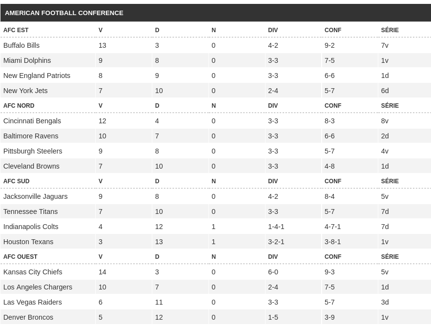
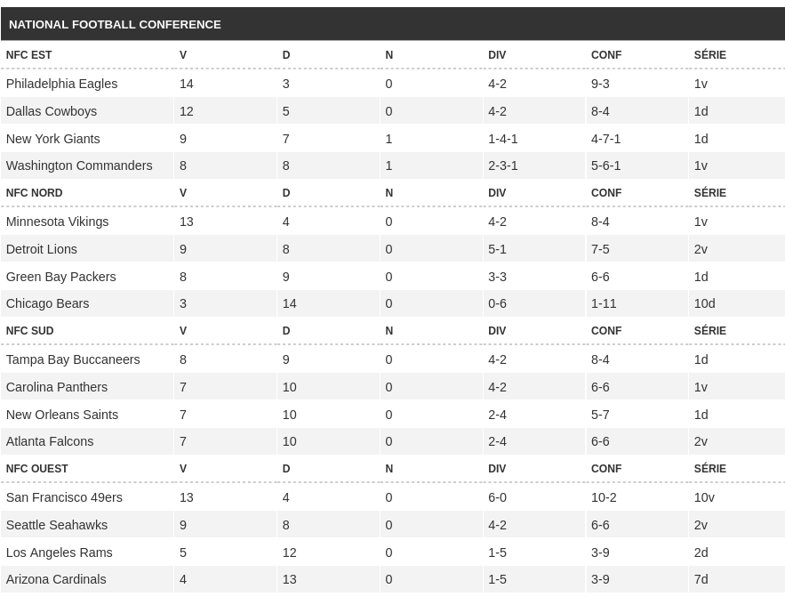

Le football américain est un sport collectif opposant deux équipes de onze joueurs qui alternent entre la défense et l'attaque. Le but du jeu est de marquer des points en amenant le ballon dans la zone des buts adverse. Pour conserver la possession, l'équipe attaquante doit parcourir au moins 10 yards en 4 tentatives (appelées « down »). Dans le même temps, l'équipe en défense doit empêcher l'attaque d'atteindre cet objectif, dans le but de reprendre la possession du ballon. Si l'équipe attaquante valide 10 yards ou plus lors de sa possession, elle bénéficie de quatre nouvelles tentatives pour continuer à gagner du terrain. Sinon, la possession du ballon change de camp et les rôles, défense/attaque, s'inversent. Les points peuvent être marqués de différentes façons : en franchissant la ligne de but avec le ballon, en lançant le ballon à un autre joueur situé de l'autre côté de la ligne de but, en plaquant le porteur du ballon de l'équipe adverse dans sa propre zone d'en-but (safety) ou en tirant au pied le ballon entre les poteaux du but adverse. Le vainqueur est l'équipe ayant marqué le plus de points à la fin du match. Aux États-Unis et au Canada (y compris au Québec), le football américain (ainsi que son pendant canadien) est simplement appelé football. Par contre, le sport dénommé football au niveau mondial y est appelé soccer.
Classements :
 